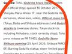
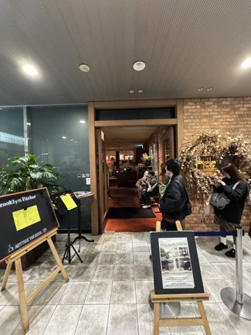

写真日記 / 2026年 / 11月
2026年11月
21日ぶん ・ 写真 1,517枚 ・ 移動 154.0km（全期間 111日 ・ 6,614枚 ・ 4,917km）
写真Claude
月火水木金土日
1
2 65枚 ・ 7.7km
3134枚 ・ 5.7km
4
65枚 ・ 7.7km
3134枚 ・ 5.7km
4 15枚 ・ 4.3km
5
15枚 ・ 4.3km
5 47枚 ・ 0.9km
6
47枚 ・ 0.9km
6 80枚 ・ 1.7km
7
80枚 ・ 1.7km
7
10枚 ・ 0km 8 22枚 ・ 2.7km
9
22枚 ・ 2.7km
9 238枚 ・ 29.7km
1046枚 ・ 0km
11
238枚 ・ 29.7km
1046枚 ・ 0km
11 90枚 ・ 6.2km
12
90枚 ・ 6.2km
12 127枚 ・ 3.6km
13
127枚 ・ 3.6km
13 87枚 ・ 29.4km
14
87枚 ・ 29.4km
14 91枚 ・ 9.2km
15
91枚 ・ 9.2km
15 43枚 ・ 21.4km
16
43枚 ・ 21.4km
16 48枚 ・ 5.3km
17
48枚 ・ 5.3km
17 139枚 ・ 1.6km
18
139枚 ・ 1.6km
18 87枚 ・ 8.8km
19
87枚 ・ 8.8km
19 99枚 ・ 7.9km
20
99枚 ・ 7.9km
20 17枚 ・ 1.9km
2132枚 ・ 6.0km
17枚 ・ 1.9km
2132枚 ・ 6.0km
22
23
24
25
26
27
28
29
30
2026年11月15日（日）
日付2026/11/15（日）
写真43枚（画像43・動画0）
移動21.4 km
場所大山東町（板橋区） ・ 東京 ・ 住吉（江東区）
食事3件
ハイライト3件
Claude362ターン ・ 593分（00:51〜23:59）
写真は43枚（画像43・動画0）。01:27はDandoriのゲスト画面。10:56は大山東町（板橋区）で、「日出鯛」と書かれた鯛の絵の扉、10:57は海老の絵の壁。11:40は玄関の戸の前に立つ子どもと男性、11:43は肩に子どもを乗せた男性と女性。13:33は「コメダ珈琲店」の店先、13:59は橙色の蓋の容器に入った黄色い飲み物と、コップを持つ子ども。14:38は「パンを楽しむ店 ぱーね」の店先。15:12は東京で、Brooklyn Parlorの入口に並ぶ人たち。19:01は住吉（江東区）で、ビールらしきもののジョッキを持つ男性2人。19:10はご飯、目玉焼き、きのこの載ったハンバーグらしきものの皿。移動は大山東町 → 東京 → 住吉。
訪れた場所
| 場所 | 滞在 | 写真 |
|---|---|---|
| 大山東町（板橋区） | 10:56–14:49 | 19枚 |
| 東京 | 15:05–17:23 | 10枚 |
| 住吉（江東区） | 18:53–22:52 | 8枚 |
この日の写真


